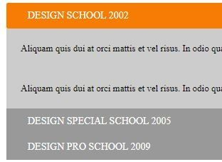
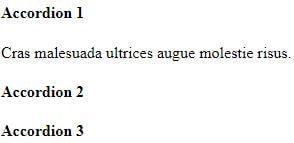
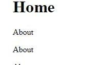
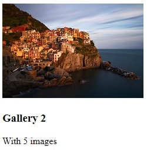
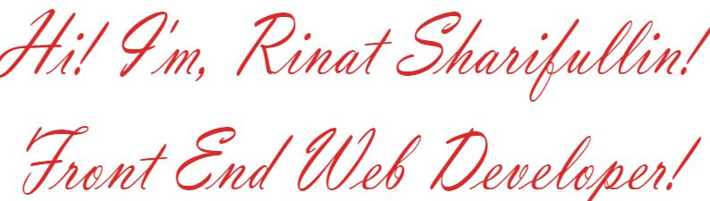
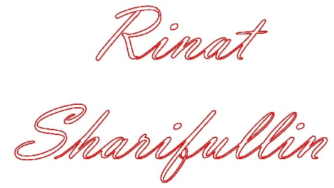
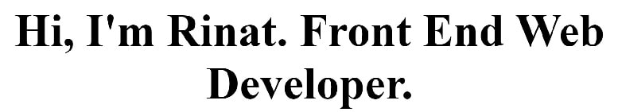
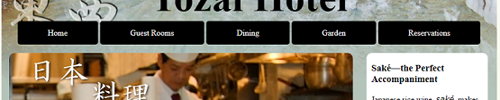
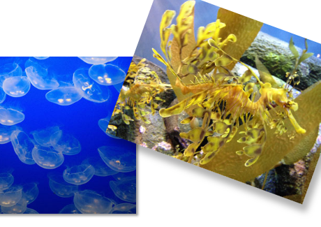

12 February 2020
 Integrating JQuery code taken from other website and following instruction integrating to our webpage.
<script src="https://ajax.googleapis.com/ajax/libs/jquery/1.7/jquery.min.js"></script>
<script src="jquery.accordion.js"></script>
<script>
$("#list1").accordion();
</script>
See webpage
 Integrating JQuery code taken from other website and following instruction integrating to our webpage.
<script src="https://ajax.googleapis.com/ajax/libs/jquery/1.7/jquery.min.js"></script>
<script src="jquery.accordion.js"></script>
<script>
$("#list1").accordion();
</script>
<style type="text/css">
.accordion-toggle {cursor: pointer;}
.accordion-content {display: none;}
.accordion-content.default {display: block;}
</style>
See webpage
 Third example done by ourself.
<style type="text/css">
h1:hover{
cursor:pointer;
}
</style>
<script src="https://ajax.googleapis.com/ajax/libs/jquery/1.7/jquery.min.js"></script>
<script src="jquery.accordion.js"></script>
<script>
$("#list1").accordion();
</script>
See webpage
12 February 2020
<link href="css/lightbox.css" rel="stylesheet" />
<script src="js/lightbox-plus-jquery.min.js">
<!-- Place somewhere in the of your document -->
<link rel="stylesheet" href="flexslider.css" type="text/css">
<script src="https://ajax.googleapis.com/ajax/libs/jquery/1.7/jquery.min.js">
<script src="jquery.flexslider.js">
<!-- Place in the , after the three links -->
<script type="text/javascript" charset="utf-8">
$(window).load(function() {
$('.flexslider').flexslider({
animation:'fade',
direction:'vertical',
slideshowSpeed:'3000',
controlNav:'true',
directionNav:'true',
})
});
</script>
<script>
lightbox.option({
'resizeDuration': 300,
'wrapAround': true,
'fadeDuration':300,
})
</script>
See webpage
12 February 2020
 Integrating JQuery code taken from other website and following instruction integrating to our webpage.
<link href="https://fonts.googleapis.com/css?family=Open+Sans|Russo+One&display=swap" rel="stylesheet">
<link href="css/lightbox.css" rel="stylesheet" />
<script src="js/lightbox-plus-jquery.min.js">
</script>
<script>
lightbox.option({
})
</script>
See webpage
12 February 2020
 Hand writing animations created with help of InkScape software.
.path {
stroke-dasharray: 2000;
stroke-dashoffset: 2000;
animation: dash 5s linear forwards ;
}
@keyframes dash {
to {
stroke-dashoffset: 0;
}
}
See webpage
10 February 2020
Created onepage website with sliding JQ script and anothes script for Lightbox effect.
body.lb-disable-scrolling {
overflow: hidden;
}
.lightboxOverlay {
position: absolute;
top: 0;
left: 0;
z-index: 9999;
background-color: black;
filter: progid:DXImageTransform.Microsoft.Alpha(Opacity=80);
opacity: 0.8;
display: none;
}
.lightbox {
position: absolute;
left: 0;
width: 100%;
z-index: 10000;
text-align: center;
line-height: 0;
font-weight: normal;
outline: none;
}
.lightbox .lb-image {
display: block;
height: auto;
max-width: inherit;
max-height: none;
border-radius: 3px;
/* Image border */
border: 4px solid white;
}
.lightbox a img {
border: none;
}
.lb-outerContainer {
position: relative;
*zoom: 1;
width: 250px;
height: 250px;
margin: 0 auto;
border-radius: 4px;
/* Background color behind image.
This is visible during transitions. */
background-color: white;
}
.lb-outerContainer:after {
content: "";
display: table;
clear: both;
}
.lb-loader {
position: absolute;
top: 43%;
left: 0;
height: 25%;
width: 100%;
text-align: center;
line-height: 0;
}
.lb-cancel {
display: block;
width: 32px;
height: 32px;
margin: 0 auto;
background: url(../images/loading.gif) no-repeat;
}
.lb-nav {
position: absolute;
top: 0;
left: 0;
height: 100%;
width: 100%;
z-index: 10;
}
.lb-container > .nav {
left: 0;
}
.lb-nav a {
outline: none;
background-image: url('data:image/gif;base64,R0lGODlhAQABAPAAAP///wAAACH5BAEAAAAALAAAAAABAAEAAAICRAEAOw==');
}
.lb-prev, .lb-next {
height: 100%;
cursor: pointer;
display: block;
}
.lb-nav a.lb-prev {
width: 34%;
left: 0;
float: left;
background: url(../images/prev.png) left 48% no-repeat;
filter: progid:DXImageTransform.Microsoft.Alpha(Opacity=0);
opacity: 0;
-webkit-transition: opacity 0.6s;
-moz-transition: opacity 0.6s;
-o-transition: opacity 0.6s;
transition: opacity 0.6s;
}
.lb-nav a.lb-prev:hover {
filter: progid:DXImageTransform.Microsoft.Alpha(Opacity=100);
opacity: 1;
}
.lb-nav a.lb-next {
width: 64%;
right: 0;
float: right;
background: url(../images/next.png) right 48% no-repeat;
filter: progid:DXImageTransform.Microsoft.Alpha(Opacity=0);
opacity: 0;
-webkit-transition: opacity 0.6s;
-moz-transition: opacity 0.6s;
-o-transition: opacity 0.6s;
transition: opacity 0.6s;
}
.lb-nav a.lb-next:hover {
filter: progid:DXImageTransform.Microsoft.Alpha(Opacity=100);
opacity: 1;
}
.lb-dataContainer {
margin: 0 auto;
padding-top: 5px;
*zoom: 1;
width: 100%;
border-bottom-left-radius: 4px;
border-bottom-right-radius: 4px;
}
.lb-dataContainer:after {
content: "";
display: table;
clear: both;
}
.lb-data {
padding: 0 4px;
color: #ccc;
}
.lb-data .lb-details {
width: 85%;
float: left;
text-align: left;
line-height: 1.1em;
}
.lb-data .lb-caption {
font-size: 13px;
font-weight: bold;
line-height: 1em;
}
.lb-data .lb-caption a {
color: #4ae;
}
.lb-data .lb-number {
display: block;
clear: left;
padding-bottom: 1em;
font-size: 12px;
color: #999999;
}
.lb-data .lb-close {
display: block;
float: right;
width: 30px;
height: 30px;
background: url(../images/close.png) top right no-repeat;
text-align: right;
outline: none;
filter: progid:DXImageTransform.Microsoft.Alpha(Opacity=70);
opacity: 0.7;
-webkit-transition: opacity 0.2s;
-moz-transition: opacity 0.2s;
-o-transition: opacity 0.2s;
transition: opacity 0.2s;
}
.lb-data .lb-close:hover {
cursor: pointer;
filter: progid:DXImageTransform.Microsoft.Alpha(Opacity=100);
opacity: 1;
}
See webpage
08 February 2020
 Hand writing animations created with help of InkScape software.
.path2 {
stroke-dasharray: 750;
stroke-dashoffset: 750;
animation: dash 3s linear forwards ;
stroke-opacity:1;
stroke-width:1;
fill:none;
stroke:#f40000;
}
@keyframes dash {
to {
stroke-dashoffset: 0;
}
}
See webpage
07 February 2020
 This text typing animation was purely develop on JavaScript. From creating p tag and positioning between body tags, to looping through array of letters and displaying one by one with help of setInterval function.
document.addEventListener('DOMContentLoaded', function(){
/*Create navigation elements*/
var navElement;
var pElement;
var aElement;
var textElement;
//var myName=["R","i","n","a","t"," ","S","h","a","r","i","f","u","l","l","i","n"];
var myName=["H","i",","," ","I","'","m"," ","R","i","n","a","t","."," ","F","r","o","n","t"," ","E","n","d"," ","W","e","b"," ","D","e","v","e","l","o","p","e","r","."];
var myTimer;
pElement = document.createElement('p'); //Create P tag
pElement.className="rinatsharifullin";
pElement.style.fontSize = '5em';
pElement.style.textAlign = 'center';
document.body.appendChild(pElement);
var q=0;
var interval = setInterval(function(){
textElement = document.createTextNode(myName[q]);
//console.log(textElement);
pElement.appendChild(textElement);
q++;
if(!myName[q]){clearInterval(interval);}
},100);
});
See webpage
05 February 2020
 This excercise intendent to gives us feeling how to do styling for different resolutions of the screen. Tablet with sizes 768px or horizontally 1020px. Next will be mobile devices with size 480px.
body{
background-color:rgb(250,250,240);
margin:0;
}
#wholeBody{
width:980px;
margin:auto;
background-image:url("../images/basin_bg.jpg");
background-repeat:no-repeat;
background-color:rgb(179,195,185);
}
h1{
font-size:5em;
text-align:center;
margin:0;
}
h2, h3{
padding:0 10px;
}
p{
padding:0 10px;
}
ul{
text-align:center;
padding:0;
}
li{
display:inline-block;
}
li a{
text-decoration:none;
background-color:black;
color:white;
padding:15px 60px;
border-radius:5px;
}
#myImage{
background-image:url("../images/chef.jpg");
background-repeat:no-repeat;
width:680px;
height:127px;
border-radius:10px 10px 0 0;
}
article{
float:left;
width:680px;
margin:15px;
background-color:white;
border-radius:10px 10px 10px 10px;
}
#rightimg{
float:right;
box-shadow:3px 3px 5px rgb(179,195,185);
}
#leftimg{
margin:0 10px 0 0;
float:left;
box-shadow:3px 3px 5px rgb(179,195,185);
}
aside{
float:right;
width:240px;
margin:15px 18px 0 0;
background-color:white;
border-radius:10px 10px 10px 10px;
}
#myImageAside{
background-image:url("../images/sake.jpg");
background-repeat:no-repeat;
width:244px;
height:144px;
border-radius:0 0 10px 10px;
}
footer{
clear:both;
background-color:black;
color:white;
padding:1px 5px;
}
@media only screen and (max-width:768px){
#wholeBody{
width:768px;
background-image:url("../images/basin_bg_tab.jpg");
}
li a{
padding:15px 40px;
}
article{
float:none;
margin:auto;
}
aside{
float:none;
width:680px;
margin:15px auto;
position:relative;
}
aside p{
width:296px;
}
#myImageAside{
position:absolute;
right:0px;
bottom:0px;
background-image:url("../images/sake_tab.jpg");
background-repeat:no-repeat;
width:300px;
height:488px;
border-radius:0 0 10px 0;
}
}
@media only screen and (max-width:480px){
#wholeBody{
width:480px;
background-image:url("../images/basin_bg_phone.jpg");
}
ul{
display:none;
}
#myImage{
background-image:url("../images/chef.jpg");
width:460px;
height:127px;
}
#rightimg{
float:none;
margin:15px;
}
#leftimg{
margin:15px;
float:none;
}
article{
float:none;
margin:auto;
width:460px;
}
aside{
width:460px;
}
#myImageAside{
overflow:hidden;
width:120px;
}
}
See webpage
04 February 2020
 Here we learned of "transforma" in CSS like transform-origin, rotate, translate, skew and scale.
body {
font-family: Tahoma, Verdana, Geneva, sans-serif;
margin: 6em 6em;
font-weight: bold;
}
ul {
list-style-type: none;
padding: 0;
margin: 0;
}
li {
float: left;
margin-right: 10px;
}
li:last-of-type {
margin-right: 0;
}
a {
display: inline-block;
}
img {
width: 200px;
height: 150px;
box-shadow: 2px 2px 2px rgba(0,0,0,.4);
transition: transform 0.3s linear;
}
a:hover img{box-shadow: 6px 6px 6px rgba(0,0,0,.3);}
a:hover #img1, a:focus #img1{
transform:rotate(-3deg) scale(1.5);
}
a:hover #img2, a:focus #img2{
transform:rotate(5deg) scale(0.5);
}
a:hover #img3, a:focus #img3{
transform:rotate(-7deg) scale(2.5);
}
a:hover #img4, a:focus #img4{
transform:rotate(20deg) ;
transform-origin:top right;
}
See webpage